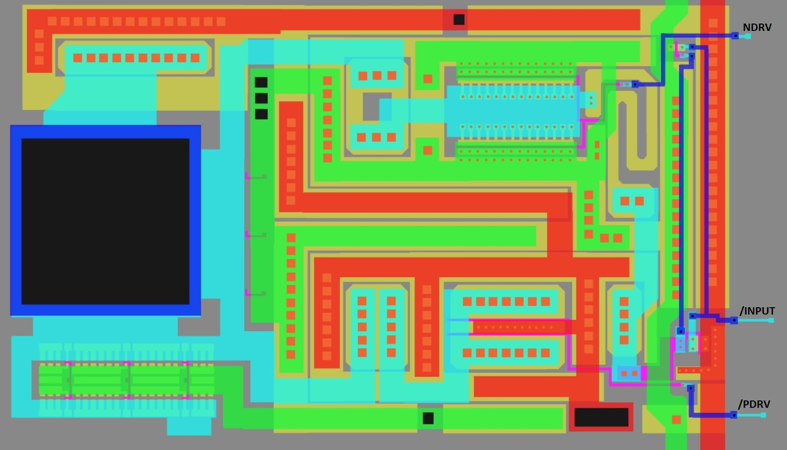
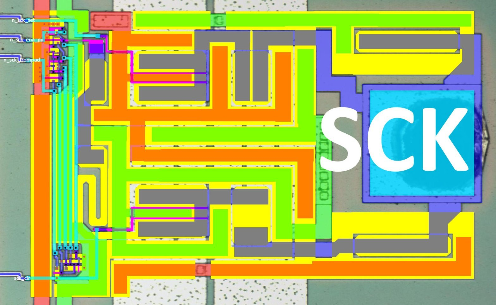
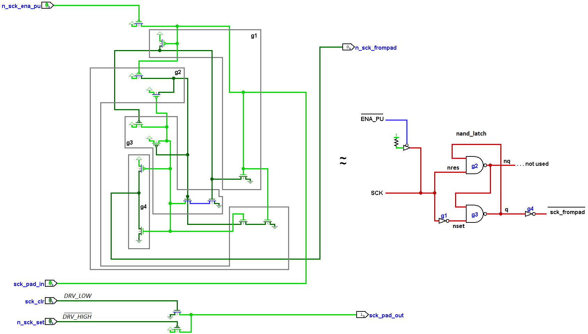
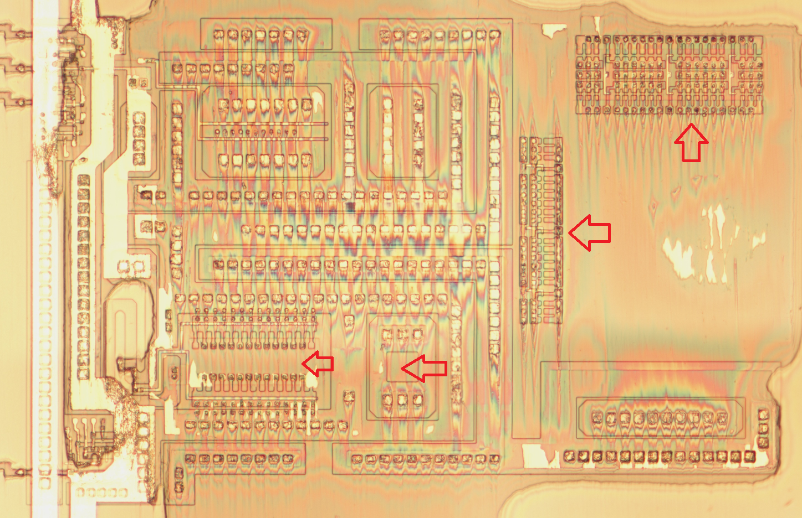
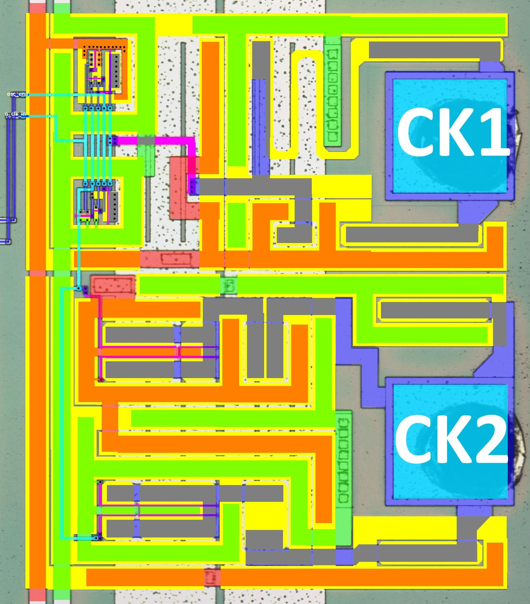
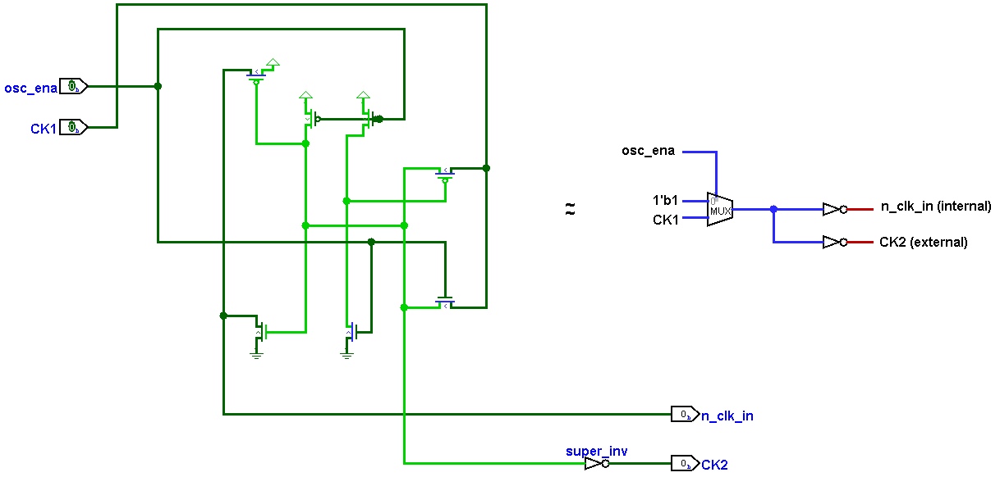

I/O Terminals & Bonding Pads
This section is considered complete, minor clarifications may be added, but in general everything is ok here.
Instead of inout it will be written bidir, since inout is easily confused with input (hello Verilog developers).
Dataset: https://drive.google.com/drive/u/2/folders/1B_YZys5RnkWCs_l3cic8TrlrKJ8l5g5u (poly)
| Name | Netlist name | Direction | Pad Type | Description |
|---|---|---|---|---|
| CK1 | ck1 | input | OSC | Input CLK, 4194304 Hz (2^22). Corresponds to the T-cycles of SM83. The power 2 input frequency allowed the internal frequency dividers to be greatly simplified, using conventional shift registers instead of Jhonson counter. Aka XI |
| CK2 | ck2 | output | OSC | Output inverted value of CK1 if OSC enabled or 0. Aka XO |
| PHI | phi | output | OBUF_A | CK1 ÷ 4. Corresponds to M-cycles of CPU (1 M-cycle = 4 T-cycles). Used as a CLK inside the cartridge for the needs of the mapper chip. |
| /RES | n_res | input | IBUF_A | System Reset |
| CPU RAM | ||||
| A15-A0 | [15:0]a | bidir | IOBUF_A | External CPU address bus. Bidirectional because it can be switched to Input mode when TEST1 is active. |
| D7-D0 | [7:0]d | bidir | IOBUF_B | External CPU data bus |
| /RD | n_rd | bidir | IOBUF_A | CPU RAM Read; Bidirectionality is controlled by TEST1 Mode |
| /WR | n_wr | bidir | IOBUF_A | CPU RAM Write; Bidirectionality is controlled by TEST1 Mode |
| /CS | n_cs | output | OBUF_A | CPU RAM ChipSelect |
| PPU VRAM | ||||
| MA12-MA0 | [12:0]ma | output | OBUF_A | External PPU VRAM Address bus |
| MD7-MD0 | [7:0]md | bidir | IOBUF_B | External PPU VRAM Data bus |
| /MRD | n_mrd | bidir | IOBUF_A | PPU VRAM Read |
| /MWR | n_mwr | bidir | IOBUF_A | PPU VRAM Write |
| /MCS | n_mcs | bidir | IOBUF_A | PPU VRAM ChipSelect |
| Test Mode | ||||
| T1 | t1 | input | IBUF_A | The main purpose is to disable all internal CPU A/D bus drivers and use values from the outside. |
| T2 | t2 | input | IBUF_A | The main purpose is to disable the internal Boot ROM. Also known as ROMDIS. |
| LCD Driver interface | ||||
| CPG | cpg | output | OBUF_A | To X-driver chip TBD |
| CPL | cpl | output | OBUF_A | Signal data latch signal. Used as CLK for Y-Driver chip; Also used by X-driver |
| FR | fr | output | OBUF_A | LCD alterating signal; FR is used to stop the LCD plating out (destroying the LCD material with DC), it inverts the drivers |
| LD0 | ld0 | output | OBUF_A | LCD Data0, To X-driver chip |
| LD1 | ld1 | output | OBUF_A | LCD Data1, To X-driver chip |
| S | s | output | OBUF_A | Common display sync signal (VSync). Used as input value for the Y-driver shift register |
| ST | st | output | OBUF_A | To X-driver chip TBD |
| Serial Link | ||||
| SCK | sck | bidir | IOBUF_C | Serial CLK |
| SIN | sin | bidir | IOBUF_B | Serial Data In |
| SOUT | sout | output | OBUF_A | Serial Data Out |
| Audio | ||||
| VIN | vin | input analog | AIBUFFER | External analog audio input (from cartridge). There is information from other sources that the voltage levels for this signal were so low that using it in the original DMG model was impractical |
| SO1 | so1 | output analog | AOBUFFER | Right analog audio output |
| SO2 | so2 | output analog | AOBUFFER | Left analog audio output |
| Port P1 | ||||
| P13-P10 | p13-p10 | bidir | IOBUF_B | From JoyPad matrix |
| P14 | p14 | output | OBUF_B | To JoyPad (U,D,L,R select) & Link port |
| P15 | p15 | output | OBUF_B | To JoyPad (A,B,Select,Start select) |
| Unbonded pads | ||||
| /NMI | n_nmi | input, not wired | IBUF_B | Non-maskable interrupt |
| M1 | m1 | output, not wired | OBUF_A | SM83 Core is in the M1 cycle (fetch opcode) |
Next is a description of the individual terminal schematics, the names correspond to @msinger's old names (he recently renamed, these names are given in parentheses)
The most detailed description of the pads that @msinger didn't have originally, there's no point in repeating the rest as they've already been researched, I'll just give some comments + link.
IOBUF_A (PAD_BIDIR)

Pad does not have an internal pullup. Pullup can be enabled with the combination NDRV = 0, /PDRV = 0. In this case, the external value will be pulled to 1 if it is defined as HighZ.
| NDRV | /PDRV | Pad |
|---|---|---|
| 0 | 0 | 1 (pulled up) |
| 0 | 1 | HighZ |
| 1 | x | 0 |
The /INPUT input port comes from the input CMOS inverter, which also acts as a dynamic latch if the input is in the HighZ state (holding the value on the FET gates for a while):
| Pad | /INPUT |
|---|---|
| 0 | 1 |
| 1 | 0 |
| HighZ | The dynamic latch returns the inverted value of the pad for a period of time when it was driven. |
See http://iceboy.a-singer.de/doc/dmg_cells.html#pad_bidir
IOBUF_B (PAD_BIDIR_ENA_PU)
It is a combined circuit PAD_OUT_DIFF + PAD_IN_PU. The inverter in the PAD_IN part is a dynamic transparent latch, in case pullup is disabled - the value is stored on the inverter gate for some time.
See http://iceboy.a-singer.de/doc/dmg_cells.html#pad_bidir_ena_pu
IOBUF_C (PAD_BIDIR_SCK)
We can call it PAD_BIDIR_ENA_PU_LATCH, i.e. it is analog of PAD_BIDIR_ENA_PU, but instead of transparent latch (inverter) there is nand_latch, which “memorizes” the input value for a longer interval.


Revision B has slight changes from Revision A due to the global addition of "combs" to some locations on the chip:

TBD: Move all differencies between SoC revisions to a separate section so that they are not spread out across the entire wiki.
IBUF_A (PAD_IN)
Inverting input. The inverter can be considered as a transparent latch (dynamic latch with gate memory), but it hardly makes sense, because all input signals using this pad are always driven.
See http://iceboy.a-singer.de/doc/dmg_cells.html#pad_in
IBUF_B (PAD_IN_PU)
Inverting input with pullup. Used only for /NMI that is not wired out, so the output from the circuit is always 0.
See http://iceboy.a-singer.de/doc/dmg_cells.html#pad_in_pu
OBUF_A (PAD_OUT)
Inverting Output.
See http://iceboy.a-singer.de/doc/dmg_cells.html#pad_out
OBUF_B (PAD_OUT_DIFF)
Inverting tri-state output. The value is therefore fed to the circuit as a complement (2 wires).
| NDRV | /PDRV | Pad Output |
|---|---|---|
| 0 | 0 | 1 |
| 0 | 1 | HighZ |
| 1 | x | 0 |
See http://iceboy.a-singer.de/doc/dmg_cells.html#pad_out_diff
OSC
CLK source with disable option.


AIBUFFER
It is a direct connection passing through an always-open transmission gate.
See http://iceboy.a-singer.de/doc/dmg_cells.html#aibuf
AOBUFFER
It is a direct conductive connection.
See http://iceboy.a-singer.de/doc/dmg_cells.html#aobuf